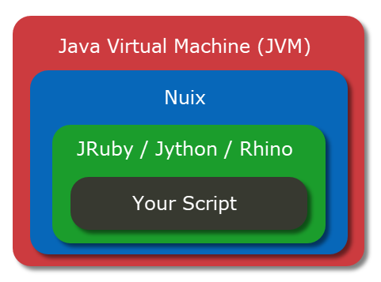
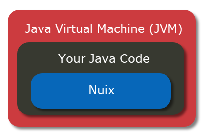

Using the Java Engine
Overview
When you run a script in Nuix you can think of your script as being at an inner most level in a series of nested technologies:

A Java Virtual Machine (JVM) executes the code of Nuix. Nuix in turn relies on one of several interpreter libraries to run your script:
Your script then makes calls into the Nuix API (which is written in Java) facilitated by the intervening interpreter which provides a translation layer between your script’s code and the Nuix API. The interpreter presents objects exposed by the Nuix API in a manner which makes them seem (mostly) native to the scripting language you employ.
When using the Java Engine API, this concept is inverted slightly. Rather than Nuix using an interpreter such as JRuby to run your script’s code, your Java code runs in the JVM and then invokes methods in the Nuix API:

This provides several benefits:
- You can develop your code in an Integrated Development Environment (IDE) such as Eclipse, IntelliJ or NetBeans.
- Write your code in the statically typed language Java.
- Compile your code into a single JAR file rather than having a series of script files.
This also means that the code you write has some additional work to perform before making use of the Nuix API. When running a script in Nuix Workstation, either through the Graphical User Interface (GUI) or nuix_console.exe (the “headless” version of Nuix Workstation), you can rely on a few things having already happened:
- Nuix has started and therefore the Nuix Engine has been initialized.
- A license has been obtained.
When developing an application using the Java Engine API, your code is responsible for taking the steps to initialize the Nuix Engine and get it licensed before you begin interacting with the Nuix API.
Setup
The first thing you need to do is download a Nuix Java Engine API release. This contains all the Nuix code and dependencies. The latest release of the Java Engine API can be downloaded here:
https://download.nuix.com/releases/engine
Once downloaded, extract the contents of the downloaded Zip file to a directory accessible to your IDE. Ideally the directory name should be relatively short, for example:
C:\engine-releases\8.0.3.121
Note
Storing the engine release in a longer directory name can pose potential issues later when Nuix Worker processes are started for something Processing, OCR or Exporting due to the way some information is passed to the workers about the class path.Additionally you need to add some entries into the PATH environment variable so that Nuix can resolve some of its dependencies properly at run-time. The PATH environment variable needs entries pointing to the bin and bin/x86 sub-directories of the engine release. For example, if you have extracted your engine release to C:\engine-releases\8.0.3.121 you will want to add the following directories to you PATH environment variable:
C:\engine-releases\8.0.3.121\binC:\engine-releases\8.0.3.121\bin\x86
Created a new Java project in your IDE of choice. Add all the JAR files in the lib sub-directory of the engine release directory. For example if you have extracted your engine release to C:\engine-releases\8.0.3.121 then you will want to add all the JAR files in the directory C:\engine-releases\8.0.3.121\lib to your project’s build path.
Initializing the Engine
In this section we are going to review the basic steps needed to initialize the engine. For a more detailed implementation with some additional features, check out the EngineWrapper class in the GitHub repository Nuix Java Engine Baseline. That project provides a baseline implementation which can be used for your own project.
Before your code can make use of the Nuix Java Engine API, several steps need to be accomplished:
- A GlobalContainer instance must be created (if one does not already exist).
- An Engine instance needs to be created.
- That Engine instance needs some basic configuration.
- That Engine instance needs to be licensed by acquiring a license from a license source.
- Once licensed, we can obtain the Utilities object from our engine instance. This Utilities object acts as our entry point into the rest of the API’s functionality.
Create a GlobalContainer
Their can only be one GlobalContainer instance per JVM. In many scenarios your code will likely create a GlobalContainer and Engine instance, make use of the API and then dispose of those things when done with them. In a more advanced scenario you may instead wish to create a GlobalContainer instance and then instantiate and dispose of Engine instances throughout the lifetime of your application.
You create a GlobalContainer instance using the nuix.engine.GlobalContainerFactory:
import nuix.engine.GlobalContainer;
import nuix.engine.GlobalContainerFactory;
GlobalContainer container = GlobalContainerFactory.newContainer();
Once you have your GlobalContainer instance you can create an Engine instance. When we create our Engine instance we will need to specify a couple settings:
- user - The user associated with the session, used by the engine to associate a user’s actions to them in case history events.
- userDataDirs - A directory containing some engine configuration data. Each engine release comes with a recommended base line user data directory in the user-data sub directory. For example, if you extracted your engine release to
C:\engine-releases\8.0.3.121then you will want to specifyC:\engine-releases\8.0.3.121\user-data.
//Define our engine configuration settings
Map<Object,Object> engineConfiguration = new HashMap<Object,Object>();
engineConfiguration.put("user", System.getProperty("user.name"));
engineConfiguration.put("userDataDirs", userDataDirs);
//Create an engine instance
engine = container.newEngine(engineConfiguration);
Obtaining a Dongle License
Before you can interact with the Nuix Engine API, your engine instance must be licensed. We obtain a license by first obtaining a Licensor from the Engine instance we created. You then ask the Licensor to seek out available licenses, acquiring one of your choosing.
// Get our engine instance licensor
Licensor licensor = engine.getLicensor();
// Define where we want the licensor to look for a license
Map<String,Object> licenseOptions = new HashMap<String,Object>();
licenseOptions.put("sources","dongle");
// Ask licensor to see what available licenses it can find
Iterable<AvailableLicence> licences = licensor.findAvailableLicences(licenseOptions);
// Iterate available licenses, we can then inspect properties of each
// license we iterate, acquiring the one that meets our needs, below
// we just acquire the first available license.
for(AvailableLicence license : licences) {
license.acquire();
}
Once you have acquired a license, your Engine instance is licensed. You may then obtain a Utilities object using the method Engine.getUtilities. From the Utilities object the rest of the Nuix Engine API is available.
Utilities utilities = engine.getUtilities();
It is important to note that the Engine object implements Closeable meaning it has a close() method. Calling the close() method releases the license held by the Engine instance, so you will want to call it when you are done using the Nuix Engine API (but not before!).
Obtaining a Server License
Obtaining a license from a Nuix Management Server (license server) is similar to obtaining a license from a dongle with a few extra steps:
- You will want to specify where the license server is located. While the license discovery process may be able to determine this on its own eventually, its best to point it in the right direction.
- You will want to provide credentials used to authenticate with the license server.
- Your engine instance and the license server communicate over a secure channel, but the engine expects your code to determine whether the certificate of the license server can be trusted or not.
String userName = "Nuix";
String password = "Password";
// Specify location of license server
System.getProperties().put("nuix.registry.servers", "127.0.0.1");
// Here is where we provide the engine with logic that will
// either trust or reject certificate of license server, below
// example trusts all certificates.
engine.whenAskedForCertificateTrust(new CertificateTrustCallback() {
@Override
public void execute(CertificateTrustCallbackInfo info) {
System.out.println("Trusting certificate blindly!");
info.setTrusted(true);
}
});
// We provide credentials for authenticating with the license server
// through this callback.
engine.whenAskedForCredentials(new CredentialsCallback(){
public void execute(CredentialsCallbackInfo info) {
info.setUsername(userName);
info.setPassword(password);
}
});
// Get our engine instance licensor
Licensor licensor = engine.getLicensor();
// Define where we want the licensor to look for a license
Map<String,Object> licenseOptions = new HashMap<String,Object>();
licenseOptions.put("sources","server");
// Ask licensor to see what available licenses it can find
Iterable<AvailableLicence> licences = licensor.findAvailableLicences(licenseOptions);
// Iterate available licenses, we can then inspect properties of each
// license we iterate, acquiring the one that meets our needs, below
// we just acquire the first available license.
for(AvailableLicence license : licences) {
license.acquire();
}
Simple Example
Note this example just demonstrates the basic steps involved and does not include proper error handling. See the EngineWrapper class in the Nuix Java Engine Baseline repository on GitHub for a more fleshed out implementation.
package com.nuix.engineexample;
import nuix.Utilities;
import nuix.engine.AvailableLicence;
import nuix.engine.Engine;
import nuix.engine.GlobalContainer;
import nuix.engine.GlobalContainerFactory;
import nuix.engine.Licensor;
public class EngineSetup {
private static GlobalContainer container = null;
public static Utilities intializeEngine(File userDataDirs){
Engine engine = null;
// Create global container if it does not already exist
if(container == null){
container = GlobalContainerFactory.newContainer();
}
//Define our engine configuration settings
Map<Object,Object> engineConfiguration = new HashMap<Object,Object>();
engineConfiguration.put("user", System.getProperty("user.name"));
engineConfiguration.put("userDataDirs", userDataDirs);
//Create an engine instance
engine = container.newEngine(engineConfiguration);
// Get our engine instance licensor
Licensor licensor = engine.getLicensor();
// Define where we want the licensor to look for a license
Map<String,Object> licenseOptions = new HashMap<String,Object>();
licenseOptions.put("sources","dongle");
// Ask licensor to see what available licenses it can find
Iterable<AvailableLicence> licences = licensor.findAvailableLicences(licenseOptions);
// Iterate available licenses, we can then inspect properties of each
// license we iterate, acquiring the one that meets our needs, below
// we just acquire the first available license.
for(AvailableLicence license : licences) {
license.acquire();
}
// If everything has worked up to this point, our engine instance should
// be licensed, so now we can obtain the Utilities object from the engine
// and return it to the caller. The Utilities object then acts as the
// entry point into the rest of the API.
//
// Note: Engine.close() should be called when we are done using the API and
// ready to release the obtained license. In this example we are expecting
// the caller will do this!
return engine.getUtilities();
}
}